Mi Galeria de Arte
 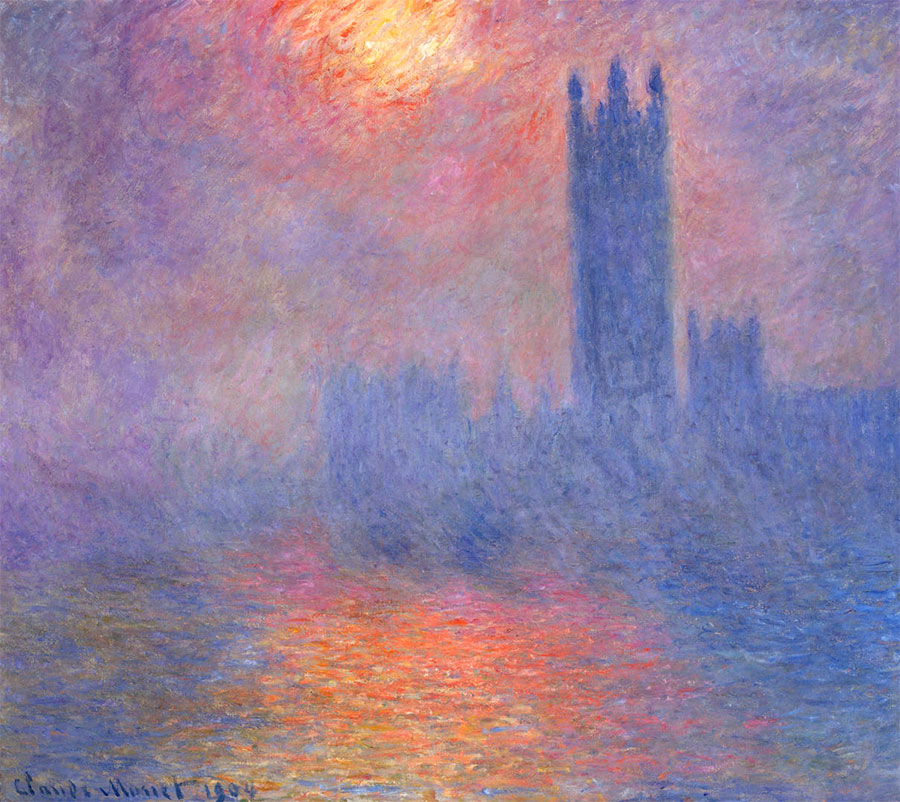
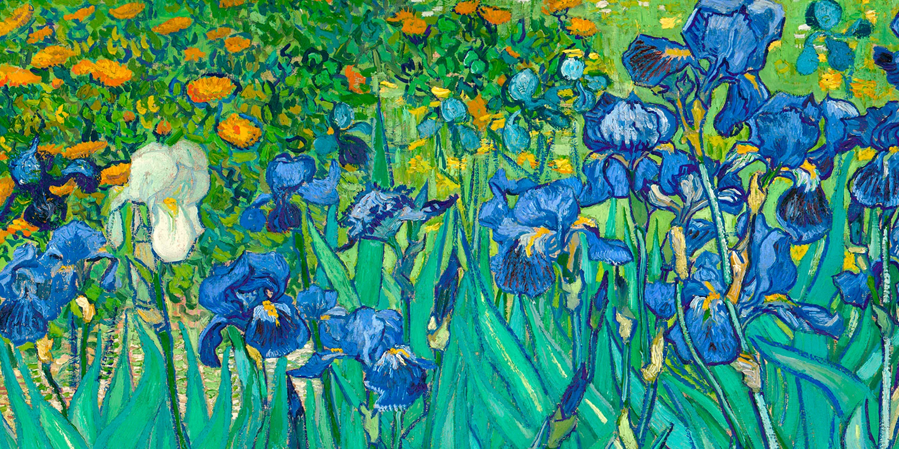
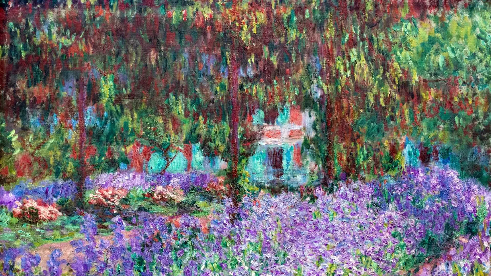
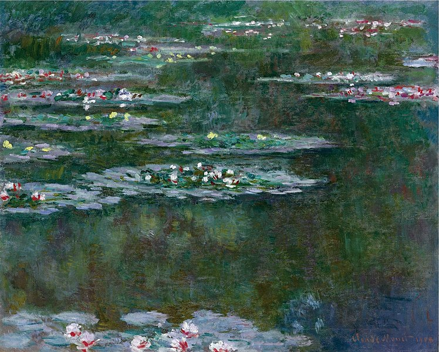
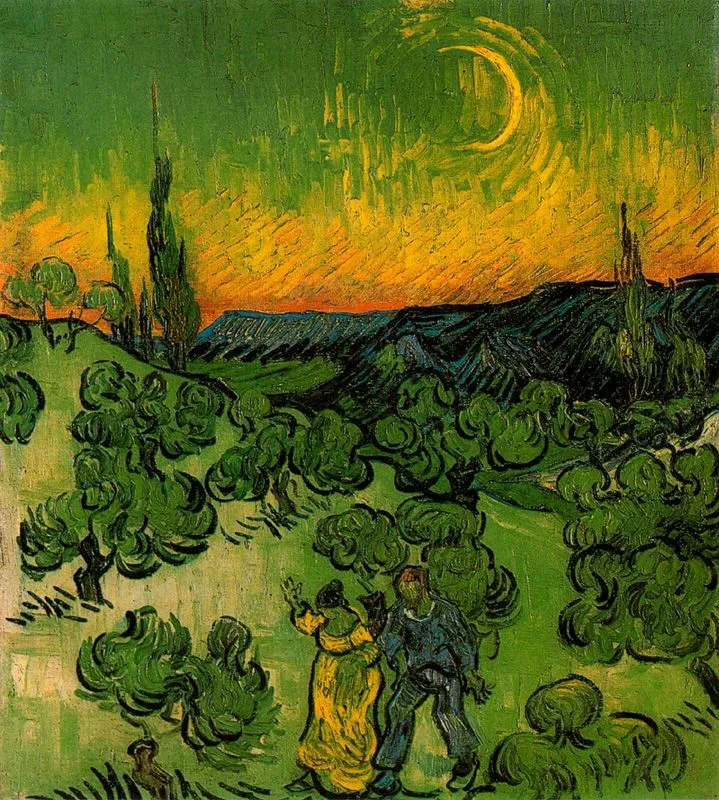
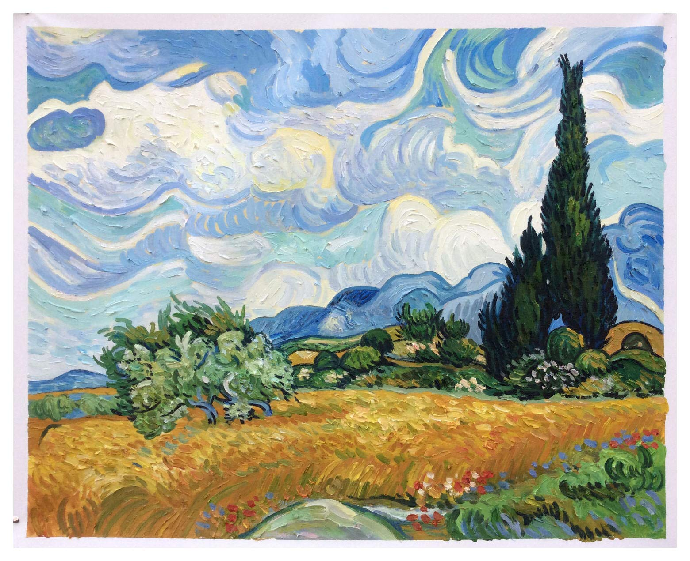
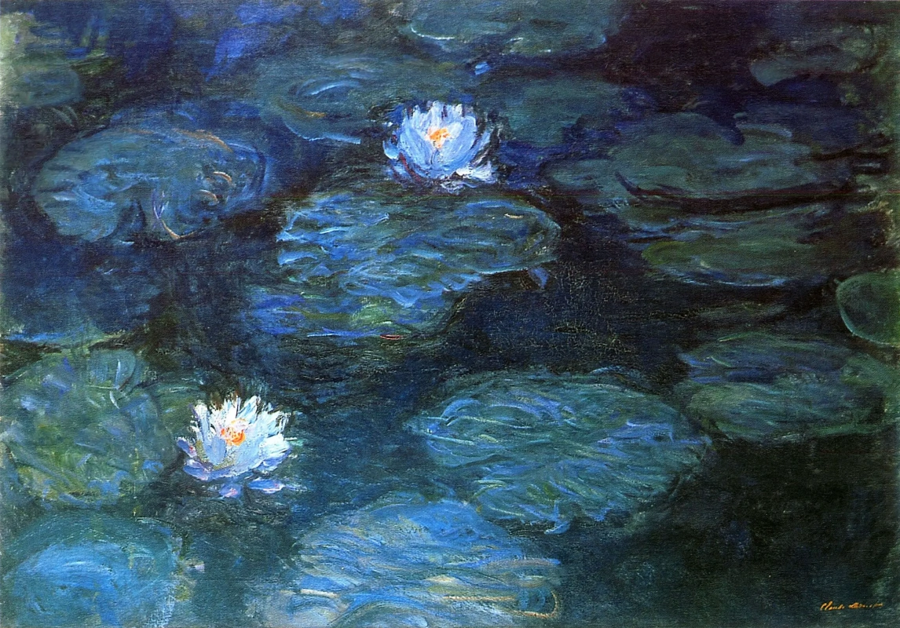
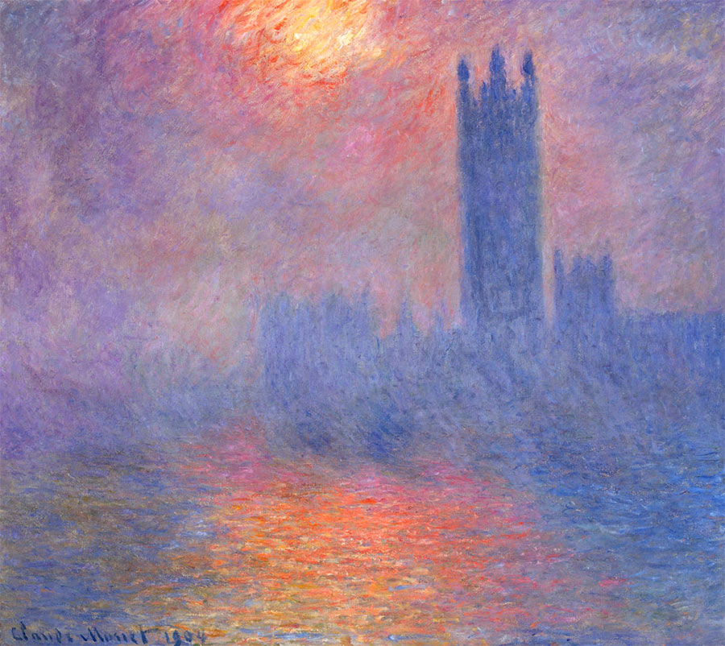
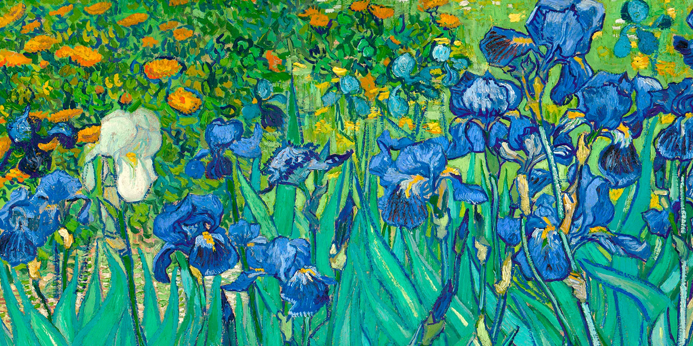
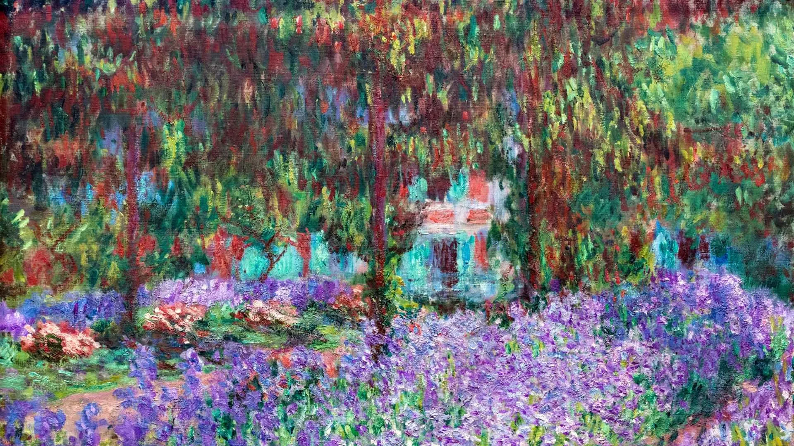
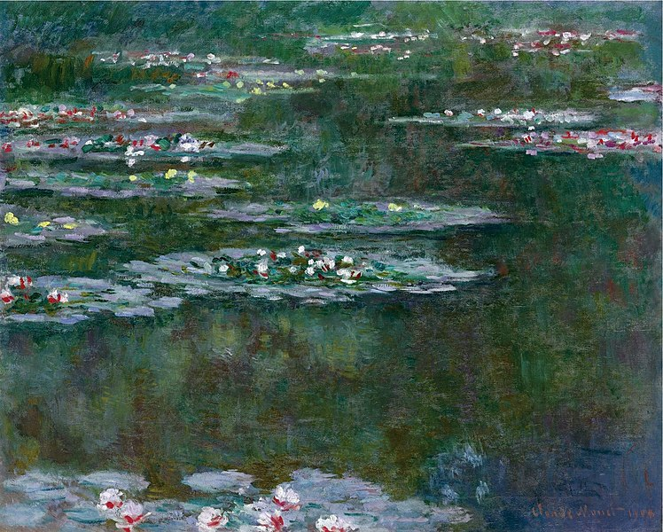
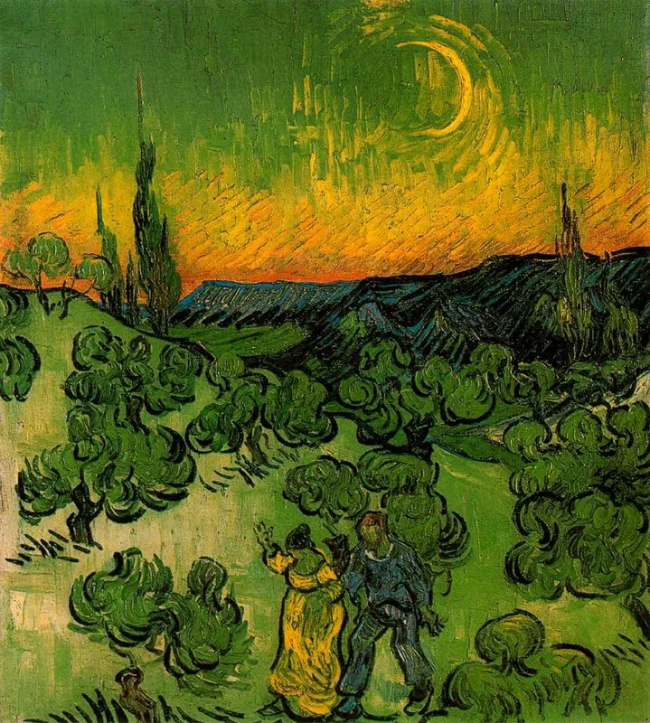
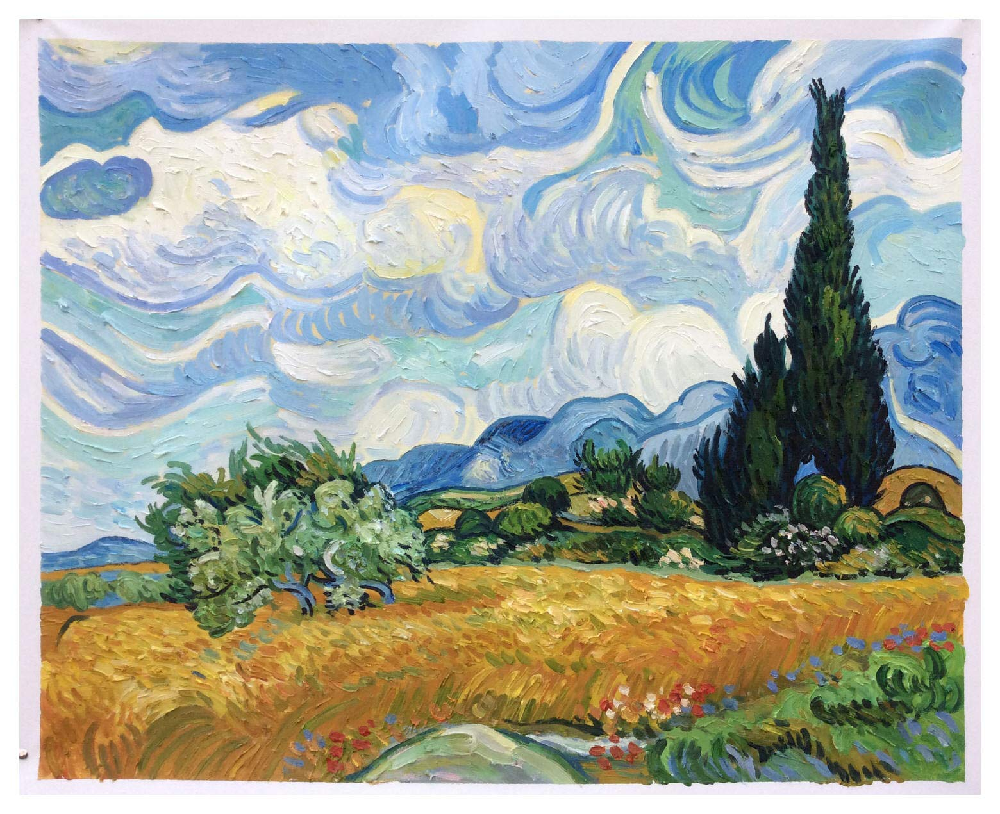
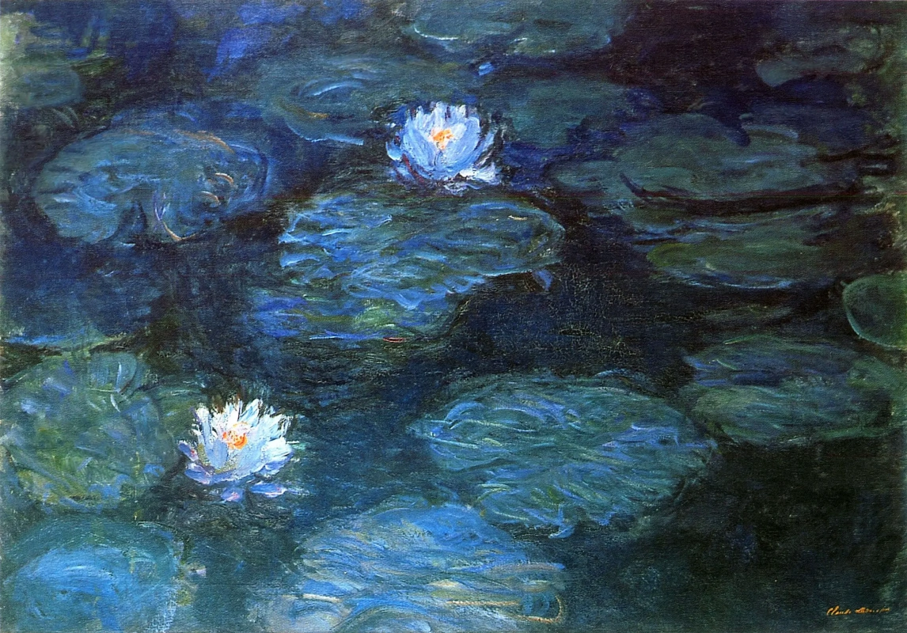
El puente japones
Claude Monet
1899
Monet siempre estuvo fascinado por la luz y los reflejos en el agua. El puente arqueado y los nenúfares en el estanque se convirtieron en un motivo recurrente en sus series finales.
La pintura refleja el continuo interés impresionista por la cultura japonesa y su interpretación de la armonía entre los seres humanos y la naturaleza.
Almendro en flor
Vincent Van Gogh
1890
Simboliza la renovación y el renacimiento de la naturaleza durante la primavera. Van Gogh logra capturar la belleza Efímera de los almendros en flor y transmitir una sensación de vitalidad y esperanza.
Inspirándose en la xilografía japonesa, el tema de las ramas en flor contra un cielo azul era uno de los preferidos del artista. El cuadro fue un regalo para su hermano Theo y su esposa, Jo, tras el nacimiento de su hijo, Vincent Willem, nombrado en honor al pintor
La noche estrellada
Vincent Van Gogh
1889
A nivel básico, “La noche estrellada” representa la vista desde la ventana del asilo de Saint-Paul-de-Mausole en Arlés.
Algunos ven la pintura como una expresión de la emocionalidad de Van Gogh.
Albert Boime argumenta que Van Gogh, quien estudió astronomía y astrología, incorporó elementos astronómicos en la pintura.
Casas del parlamento al atardecer
Claude Monet
1904
Representa una vista de las Casas del Parlamento en Londres, Inglaterra, durante el atardecer.
Monet, durante sU estadía en Londres, pintó varias versiones de este icónico edificio. La serie se caracteriza por sus numerosas variaciones en cuanto a la iluminación, el clima y la hora del día, lo que permitió a Monet explorar el efecto de la luz y la atmósfera en la apariencia de los edificios. En esta obra en particular, captura la majestuosidad de las Casas del Parlamento bañadas por la luz dorada del atardecer.
Lirios
Vincent Van Gogh
1889
Esta pintura es una de las más icónicaS de van Gogh y representa un jardín de iris en flor, con una gran variedad de colores y texturas.
Van Gogh utilizó tonos contrastantes y complementarios para crear una sensación de luminosidad y vitalidad en la pintura. La obra se caracteriza por su uso audaz del color, con pinceladas sueltas y una paleta intensa y vibrante.
El jardin del artista en Giverny
Claude Monet
1900
El cuadro representa el jardín que rodeaba su casa, un lugar lleno de belleza y colorido.
Los lirios son el centro de atención en esta pintura, con pinceladas gruesas que capturan su gama de Tonos violeta.
La luminosidad y los colores predominantes, como los violetas y los naranjas, reflejan influencias modernistas y simbolistas.
Nympheas
Claude Monet
1899
Es una serie de aproximadamente 250 pinturas al óleo.
Estas pinturAs representan su jardín de flores en su casa en Giverny, y fueron el enfoque principal de su producción artística durante los últimos treinta años de su vida.
Paisaje iluminado por la luna
Vincent Van Gogh
1887
En esta pintura, van Gogh representa un paisaje industrial en el barrio de Montmartre en París. Las fábricas y edificios se bañan en la suave luz de la luna, creando una escena evocadora y misterioSa. La elección de colores y las pinceladas expresivas reflejan la sensibilidad artística única de van Gogh.
Campo de trigos con cipreses
Vincent Van Gogh
1889
La pintura representa el paisaje desde la ventana de su habitación, con un campo de trigo y un gran ciprés respaldados por montañas y nubes.
El viento, las montañas, las nubes y la vegetación se plasman a la perfección en este óleo sobre lienzo. El ciprés aparece de gran tamaño, casi uniendo la tierra y el cielo, otorgando equilibrio a la obra.
Lirios en el agua
Claude Monet
1899
Es una serie de aproximadamente 250 pinturas de nenúfares.
En estas pinturas, Monet exploró la variación de la luz, el color y la atmósfera a lo largo del día y las estaciones. Los nenúfares flotan en el agua, creando reflejos y patrones cambiantes.